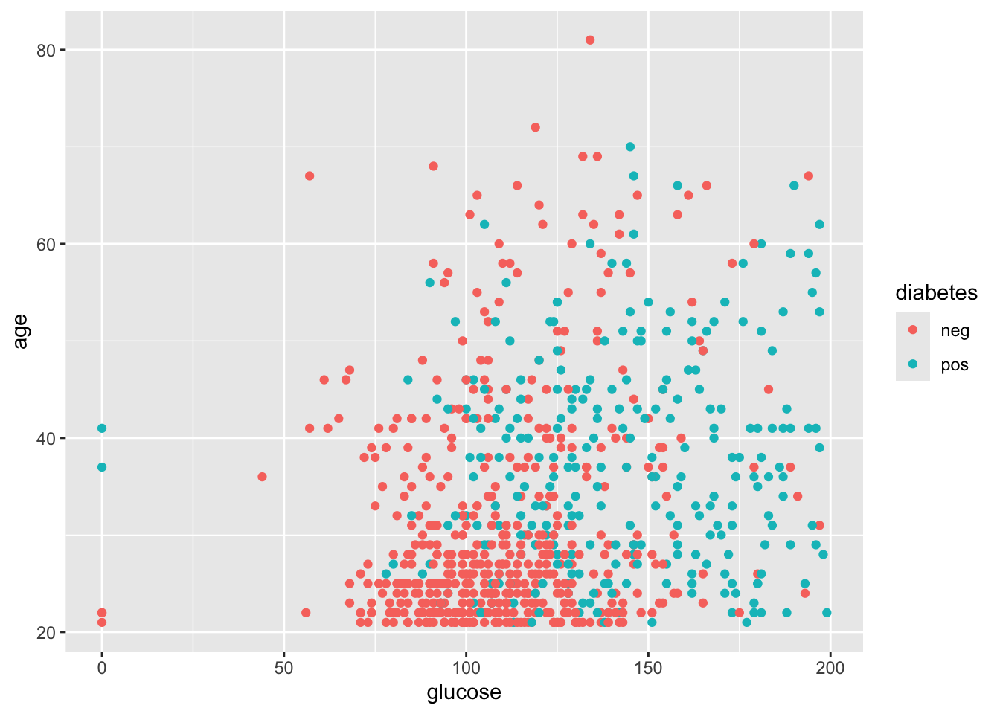
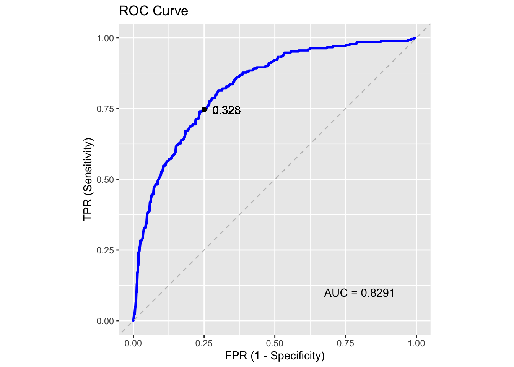

Chapter 3 Introduction to Classification
3.1 Visualise logistic and logit functions
In this chapter, we will focus on logistic regression for classification. Let’s first look at what logistic and logit function look like.
3.1.1 Logistic function
Let’s write our first function logestic() as follows.
# Write your first function
logistic <- function(y) {
exp(y) / (1 + exp(y))
}
# Try it with different values:
logistic(0.1)
#> [1] 0.5249792
logistic(c(-3, -2, 0.5, 3, 5))
#> [1] 0.04742587 0.11920292 0.62245933 0.95257413 0.99330715This is the equivalent to the built-in plogis() function in the stat
package for the
logistic distribution:
3.1.2 Logit function
Now, let look at the logistic’s inverse function logit(), and let’s define it
manually. Note, this function only support input between 0 and 1.
# Write your first function
logit <- function(x) {
log(x / (1 - x))
}
# Try it with different values:
logit(0.4)
#> [1] -0.4054651
logit(c(0.2, 0.3, 0.5, 0.7, 0.9))
#> [1] -1.3862944 -0.8472979 0.0000000 0.8472979 2.1972246
logit(c(-1, 2, 0.4))
#> Warning in log(x/(1 - x)): NaNs produced
#> [1] NaN NaN -0.4054651Again, the built-in stat package’s logistic distribution has an equivalent
function qlogis(), though with a different name.
3.1.3 Visualise the distribution
Logisitc function
# You can use seq() function to generate a vector
# Check how to use it by help(seq) or ?seq
x = seq(-7, 7, 0.3)
df = data.frame('x'=x, 'logistic'=plogis(x))
# You can plot by plot function
# plot(x=df$x, y=df$logistic, type='o')
# Or ggplot2
library(ggplot2)
ggplot(df, aes(x=x, y=logistic)) +
geom_point() + geom_line()
Logit function
3.2 Logistic regression on Diabetes
3.2.1 Load Pima Indians Diabetes Database
This dataset is originally from the National Institute of Diabetes and Digestive and Kidney Diseases. The objective of the dataset is to diagnostically predict whether or not a patient has diabetes, based on certain diagnostic measurements included in the dataset. Several constraints were placed on the selection of these instances from a larger database. In particular, all patients here are females at least 21 years old of Pima Indian heritage.
The datasets consist of several medical predictor (independent) variables and one target (dependent) variable, Outcome. Independent variables include the number of pregnancies the patient has had, their BMI, insulin level, age, and so on.
Acknowledgement: This notebook is adapted and updated from STAT1005.
# Install the mlbench library for loading the datasets
if (!requireNamespace("mlbench", quietly = TRUE)) {
install.packages("mlbench")
}
# Load data
library(mlbench)
data(PimaIndiansDiabetes)
# Check the first few lines
dim(PimaIndiansDiabetes)
#> [1] 768 9
head(PimaIndiansDiabetes)
#> pregnant glucose pressure triceps insulin mass pedigree age diabetes
#> 1 6 148 72 35 0 33.6 0.627 50 pos
#> 2 1 85 66 29 0 26.6 0.351 31 neg
#> 3 8 183 64 0 0 23.3 0.672 32 pos
#> 4 1 89 66 23 94 28.1 0.167 21 neg
#> 5 0 137 40 35 168 43.1 2.288 33 pos
#> 6 5 116 74 0 0 25.6 0.201 30 negNow, let’s check two potential features: glucose and age, colored by the diabetes labels.
library(ggplot2)
ggplot(data=PimaIndiansDiabetes, aes(x=glucose, y=age)) +
geom_point(aes(color=diabetes))
Before we start fit models, let’s split the data into training and test sets in a 4:1 ratio. Let define it manually, though there are functions to do it automatically.
3.2.2 Fit logistic regression
In logistic regression, the predicted probability to be class 1 is:
\[P(y=1|X, W) = \sigma(w_0, x_1 * w_1 + ... + x_p * w_p)\]
where the \(\sigma()\) denotes the logistic function.
In R, the built-in package stats already have functions to fit
generalised linear model (GLM),
including logistic regression, a type of GML.
Here, let’s start with the whole dataset to fit a logistic regression.
Note, we will specify the model family as binomial, as the likelihood we
are using in logistic regression is a Bernoulli likelihood, a special case of
binomial likelihood when the total trial n=1.
# Define formula in different ways
# my_formula = as.formula(diabetes ~ glucose + age)
# my_formula = as.formula(paste(colnames(PimaIndiansDiabetes)[1:8], collapse= " + "))
# my_formula = as.formula(diabetes ~ .)
# Fit logistic regression
glm_res <- glm(diabetes ~ ., data=df_train, family = binomial)
# We can use the logLik() function to obtain the log likelihood
logLik(glm_res)
#> 'log Lik.' -281.9041 (df=9)We can use summary() function to see more details about the model fitting.
summary(glm_res)
#>
#> Call:
#> glm(formula = diabetes ~ ., family = binomial, data = df_train)
#>
#> Coefficients:
#> Estimate Std. Error z value Pr(>|z|)
#> (Intercept) -8.044602 0.826981 -9.728 < 2e-16 ***
#> pregnant 0.130418 0.036080 3.615 0.000301 ***
#> glucose 0.032196 0.004021 8.007 1.18e-15 ***
#> pressure -0.017158 0.006103 -2.811 0.004934 **
#> triceps -0.003425 0.007659 -0.447 0.654752
#> insulin -0.001238 0.001060 -1.169 0.242599
#> mass 0.104029 0.018119 5.741 9.39e-09 ***
#> pedigree 0.911030 0.344362 2.646 0.008156 **
#> age 0.012980 0.010497 1.237 0.216267
#> ---
#> Signif. codes: 0 '***' 0.001 '**' 0.01 '*' 0.05 '.' 0.1 ' ' 1
#>
#> (Dispersion parameter for binomial family taken to be 1)
#>
#> Null deviance: 756.83 on 575 degrees of freedom
#> Residual deviance: 563.81 on 567 degrees of freedom
#> AIC: 581.81
#>
#> Number of Fisher Scoring iterations: 53.2.3 Assess on test data
Now, we can evaluate the accuracy of the model on the 25% test data.
# Train the full model on the training data
glm_train <- glm(diabetes ~ ., data=df_train, family = binomial)
# Predict the probability of being diabeties on test data
# We can also set a threshold, e.g., 0.5 for the predicted label
pred_prob = predict(glm_train, df_test, type = "response")
pred_label = pred_prob >= 0.5
# Observed label
obse_label = df_test$diabetes == 'pos'
# Calculate the accuracy on test data
# think how accuracy is defined
# we can use (TN + TP) / (TN + TP + FN + FP)
# we can also directly compare the proportion of correctness
accuracy = mean(pred_label == obse_label)
print(paste("Accuracy on test set:", accuracy))
#> [1] "Accuracy on test set: 0.796875"3.2.4 Model selection and diagnosis
3.2.4.1 Model2: New feature set by removing triceps
# Train the full model on the training data
glm_mod2 <- glm(diabetes ~ pregnant + glucose + pressure +
insulin + mass + pedigree + age,
data=df_train, family = binomial)
logLik(glm_mod2)
#> 'log Lik.' -282.0038 (df=8)
summary(glm_mod2)
#>
#> Call:
#> glm(formula = diabetes ~ pregnant + glucose + pressure + insulin +
#> mass + pedigree + age, family = binomial, data = df_train)
#>
#> Coefficients:
#> Estimate Std. Error z value Pr(>|z|)
#> (Intercept) -8.0317567 0.8251403 -9.734 < 2e-16 ***
#> pregnant 0.1308094 0.0361230 3.621 0.000293 ***
#> glucose 0.0324606 0.0039854 8.145 3.80e-16 ***
#> pressure -0.0175651 0.0060269 -2.914 0.003563 **
#> insulin -0.0014402 0.0009593 -1.501 0.133291
#> mass 0.1018155 0.0173811 5.858 4.69e-09 ***
#> pedigree 0.9000134 0.3428652 2.625 0.008665 **
#> age 0.0131238 0.0105147 1.248 0.211982
#> ---
#> Signif. codes: 0 '***' 0.001 '**' 0.01 '*' 0.05 '.' 0.1 ' ' 1
#>
#> (Dispersion parameter for binomial family taken to be 1)
#>
#> Null deviance: 756.83 on 575 degrees of freedom
#> Residual deviance: 564.01 on 568 degrees of freedom
#> AIC: 580.01
#>
#> Number of Fisher Scoring iterations: 5# Predict the probability of being diabeties on test data
# We can also set a threshold, e.g., 0.5 for the predicted label
pred_prob2 = predict(glm_mod2, df_test, type = "response")
pred_label2 = pred_prob2 >= 0.5
accuracy2 = mean(pred_label2 == obse_label)
print(paste("Accuracy on test set with model2:", accuracy2))
#> [1] "Accuracy on test set with model2: 0.807291666666667"3.2.4.2 Model3: New feature set by removing triceps and insulin
# Train the full model on the training data
glm_mod3 <- glm(diabetes ~ pregnant + glucose + pressure +
mass + pedigree + age,
data=df_train, family = binomial)
logLik(glm_mod3)
#> 'log Lik.' -283.1342 (df=7)
summary(glm_mod3)
#>
#> Call:
#> glm(formula = diabetes ~ pregnant + glucose + pressure + mass +
#> pedigree + age, family = binomial, data = df_train)
#>
#> Coefficients:
#> Estimate Std. Error z value Pr(>|z|)
#> (Intercept) -7.797803 0.802287 -9.719 < 2e-16 ***
#> pregnant 0.130990 0.035957 3.643 0.00027 ***
#> glucose 0.030661 0.003755 8.164 3.23e-16 ***
#> pressure -0.017847 0.005953 -2.998 0.00272 **
#> mass 0.097356 0.016969 5.737 9.61e-09 ***
#> pedigree 0.824150 0.338299 2.436 0.01484 *
#> age 0.015134 0.010426 1.452 0.14663
#> ---
#> Signif. codes: 0 '***' 0.001 '**' 0.01 '*' 0.05 '.' 0.1 ' ' 1
#>
#> (Dispersion parameter for binomial family taken to be 1)
#>
#> Null deviance: 756.83 on 575 degrees of freedom
#> Residual deviance: 566.27 on 569 degrees of freedom
#> AIC: 580.27
#>
#> Number of Fisher Scoring iterations: 5# Predict the probability of being diabeties on test data
# We can also set a threshold, e.g., 0.5 for the predicted label
pred_prob3 = predict(glm_mod3, df_test, type = "response")
pred_label3 = pred_prob3 >= 0.5
accuracy3 = mean(pred_label3 == obse_label)
print(paste("Accuracy on test set with model3:", accuracy3))
#> [1] "Accuracy on test set with model3: 0.786458333333333"3.3 Cross-validation
In last section, we split the whole dataset into 75% for training and 25% for testing. However, when the dataset is small, the test set may not be big enough and introduce high variance on the assessment.
One way to reduce this variance in assessment is performing cross-validation, where we split the data into K folds and use K-1 folds for training and the remaining fold for testing. This procedure will be repeated for fold 1 to fold K as testing fold and all folds will be aggregated for joint assessment.
K is usually taken 3, 5 or 10. In extreme case that K=n_sample, we call it leave-one-out cross-validation (LOOCV).
Let’s load the dataset (again) first.
Besides implement the cross-validation from scratch, there are packages
supporting it well, including caret package. We will install it and use it for
cross-validation here.
# Install the caret library for cross-validation
if (!requireNamespace("caret", quietly = TRUE)) {
install.packages("caret")
}
library(caret)
#> Loading required package: lattice
# Define training control
# We also want to have savePredictions=TRUE & classProbs=TRUE
set.seed(0)
my_trControl <- trainControl(method = "cv", number = 5,
classProbs = TRUE,
savePredictions = TRUE)
# Train the model
cv_model <- train(diabetes ~ ., data = PimaIndiansDiabetes,
method = "glm",
family=binomial(),
trControl = my_trControl)
# Summarize the results
print(cv_model)
#> Generalized Linear Model
#>
#> 768 samples
#> 8 predictor
#> 2 classes: 'neg', 'pos'
#>
#> No pre-processing
#> Resampling: Cross-Validated (5 fold)
#> Summary of sample sizes: 615, 614, 615, 614, 614
#> Resampling results:
#>
#> Accuracy Kappa
#> 0.7708344 0.4695353We can also access to detailed prediction results after concatenating the K folds:
head(cv_model$pred)
#> pred obs neg pos rowIndex parameter Resample
#> 1 neg neg 0.9656694 0.03433058 4 none Fold1
#> 2 neg neg 0.8581071 0.14189290 6 none Fold1
#> 3 neg pos 0.9508306 0.04916940 7 none Fold1
#> 4 neg pos 0.6541361 0.34586388 17 none Fold1
#> 5 neg pos 0.7675666 0.23243342 20 none Fold1
#> 6 neg pos 0.6132685 0.38673152 26 none Fold1We can double check the accuracy:
3.4 More assessment metrics
3.4.1 Two types of error
In the above sections, we used the accuracy to perform model diagnosis, either only on one testing dataset or aggregating cross multiple folds in cross- validation.
Accuracy is a widely used metric for model evaluation, on the averaged error rate. However, this metric still have limitations when assessing the model performance, especially the following two:
When the samples are highly imbalance, high accuracy may not mean a good model. For example, for a sample with 990 negative samples and 10 positive samples, a simple model by predicting for all sample as negative will give an accuracy of 0.99. Thus, for highly imbalanced samples, we should be careful when interpreting the accuracy.
In many scenarios, our tolerance on false positive errors and false negative errors may be different and we want to know both for a certain model. They are often called as type I and II errors:
- Type I error: false positive (rate)
- Type II error: false negative (rate) - a joke way to remember what type II mean Negative has two stripes.
Here, we use the diabetes dataset and their cross-validation results above to illustrate the two types of errors and the corresponding model performance evaluation.
# Let's start to define the values for the confusion matrix first
# Recall what the difference between & vs &&
# Read more: https://stat.ethz.ch/R-manual/R-devel/library/base/html/Logic.html
TP = sum((cv_model$pred$obs == 'pos') & (cv_model$pred$pred == 'pos'))
FN = sum((cv_model$pred$obs == 'pos') & (cv_model$pred$pred == 'neg'))
FP = sum((cv_model$pred$obs == 'neg') & (cv_model$pred$pred == 'pos'))
TN = sum((cv_model$pred$obs == 'neg') & (cv_model$pred$pred == 'neg'))
print(paste('TP, FN, FP, TN:', TP, FN, FP, TN))
#> [1] "TP, FN, FP, TN: 151 117 59 441"We can also use the table() function to get the whole confusion matrix.
Read more about the
table function
for counting the frequency of each element.
A similar way is the
confusionMatrix()
in caret package.
# Calculate confusion matrix
confusion_mtx = table(cv_model$pred[, c("obs", "pred")])
confusion_mtx
#> pred
#> obs neg pos
#> neg 441 59
#> pos 117 151
# similar function confusionMatrix
# conf_mat = confusionMatrix(cv_model$pred$pred, cv_model$pred$obs)
# conf_mat$tableWe can also plot out the confusion matrix
# Change to data.frame before using ggplot
confusion_df = as.data.frame(confusion_mtx)
ggplot(confusion_df, aes(pred, obs, fill= Freq)) +
geom_tile() + geom_text(aes(label=Freq)) +
scale_fill_gradient(low="white", high="darkgreen")Also the false positive rate, false negative rate and true negative rate.
Note, the denominator is always the number of observed samples with the
same label, namely they are a constant for a specific dataset.
FPR = FP / sum(cv_model$pred$obs == 'neg')
FNR = FN / sum(cv_model$pred$obs == 'pos')
TPR = TP / sum(cv_model$pred$obs == 'pos')
print(paste("False positive rate:", FPR))
#> [1] "False positive rate: 0.118"
print(paste("False negative rate:", FNR))
#> [1] "False negative rate: 0.436567164179104"
print(paste("True positive rate:", TPR))
#> [1] "True positive rate: 0.563432835820896"3.4.2 ROC curve
In the above assessment, we only used \(P>0.5\) to denote predicted label as positive. We can imagine if we a lower cutoff lower, we will have more false positives and fewer false negatives. Indeed, in different scenarios, people may choose different level of cutoff for their tolerance of different types of errors.
Let’s try cutoff \(P>0.4\). Think what will you expect.
# Original confusion matrix
table(cv_model$pred[, c("obs", "pred")])
#> pred
#> obs neg pos
#> neg 441 59
#> pos 117 151
# New confusion matrix with cutoff 0.4
cv_model$pred$pred_new = as.integer(cv_model$pred$pos >= 0.4)
table(cv_model$pred[, c("obs", "pred_new")])
#> pred_new
#> obs 0 1
#> neg 408 92
#> pos 89 179Therefore, we may want to assess the model performance by varying the cutoffs and obtain a more systematic assessment.
Actually, the Receiver operating characteristic (ROC) curve is what you need. It presents the TPR (sensitivity) vs the FPR (i.e., 1 - TNR or 1 - specificity) when varying the cutoffs.
In order to achieve this, we can calculate FPR and TPR manually by varying the
cutoff through a for loop. Read more about
for loop and you may try
write your own and here is an example from the
cardelino package.
For simplicity, let use an existing tool implemented in the plotROC package:
plotROC::geom_roc() that is compatible with ggplot2.
# Install the plotROC library for plotting ROC curve
if (!requireNamespace("plotROC", quietly = TRUE)) {
install.packages("plotROC")
}
library(ggplot2)
library(plotROC)
# You can set the n.cuts to show the cutoffs on the curve
g = ggplot(cv_model$pred, aes(m = pos, d = as.integer(obs=='pos'))) +
geom_roc(n.cuts=7, hjust = -0.4, vjust = 1.5) +
coord_equal() + ggtitle("ROC curve")
# Calculate AUC from the graph
AUC_val = calc_auc(g)$AUC
#> Warning: The following aesthetics were dropped during statistical transformation: m, d
#> ℹ This can happen when ggplot fails to infer the correct grouping structure in
#> the data.
#> ℹ Did you forget to specify a `group` aesthetic or to convert a numerical
#> variable into a factor?
# Display the plot
g + annotate("text", x=0.8, y=0.1, label=paste("AUC =", round(AUC_val, 4)))
#> Warning: The following aesthetics were dropped during statistical transformation: m, d
#> ℹ This can happen when ggplot fails to infer the correct grouping structure in
#> the data.
#> ℹ Did you forget to specify a `group` aesthetic or to convert a numerical
#> variable into a factor?